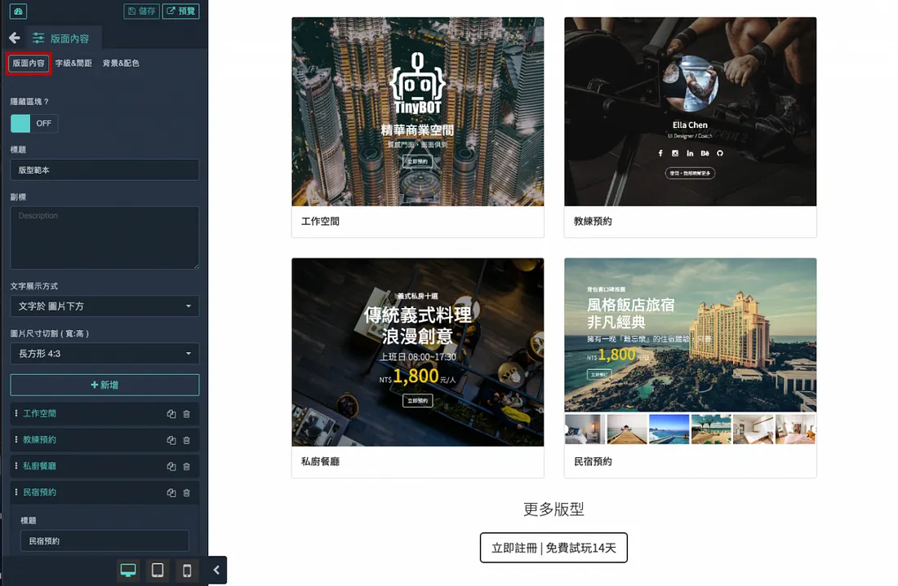

Hello！WeHelp
WeHelp 第7屆申請－問題回應
個人簡介與申請動機
我是蘇郁鈞，畢業於國立屏東科技大學的社會工作系，高中時也學過廣告設計。
畢業後，我先在社福機構擔任社工，之後在「齊文藝室」共享辦公室擔任營運管理的角色。這些經驗讓我更熟悉團隊協作、顧客服務與專案執行，同時也培養了解決問題的能力。
我開始對程式設計產生興趣，是因為在管理齊文藝室的過程中，需要設定網站與客服。當時因為服務內容多元（涵蓋座位預約、場地租借、活動報名、會員管理、商品購買…等），在尋找合適的網站服務商時，發現現有模板很多不符合實際使用需求；然而要另外開發則需要額外付一筆費用去開發特定功能，但製作完成後的後台管理不一定能夠讓夥伴都能自由操作。
由於當時完全不懂程式設計，還是必須在有限的模板內，從需求與美觀、使用體驗中做平衡。那次的經驗讓我開始好奇：如果我能自己設計網站，或許就能真正打造出更理想的版本。
在客服方面，我也嘗試導入自動化流程。雖然沒有程式基礎，但我仍試著設計自動回覆系統，甚至讓 AI 能夠回答約七成的基本顧客問題。雖然最終因記憶系統屬於更深入的操作，沒有完成能讓 AI 理解前後文再回覆的版本，但這個過程讓我從邏輯思考與問題解決中獲得了很大的成就感。
在這些嘗試中，我發現「思考解決方案」本身就是讓我感到快樂的事。後來我在 Threads 上看到許多人分享自動化與程式設計的應用，進而認識了 WeHelp 計畫。
過去我常想：「如果有一天能自己設計出一個能實際運作的網站，一定很酷。」在看過 WeHelp Demo Day 後，看到學長姐們從零開始成功做出屬於自己的作品，讓我發現，即使完全沒有基礎，自己也有機會做到。因此，我決定提出這次的申請。
過去的職場經驗讓我學會溝通與管理，但我希望能培養一項更具專業性與延展性的技能。藉由這次訓練，我希望在結業後能成功轉職為軟體工程師，去看見更多不同可能的自己。希望未來能以技術解決現實問題，創造更好的使用體驗。
曾經做過哪些軟體工程技術相關的學習？若有作品請分享給我們。
以下是我過去與軟體技術相關的嘗試與學習：
-
近期開始學習網頁程式，主要是透過 彭彭老師的 YouTube 影片自學
（HTML、CSS、JavaScript 基礎）。

-
雖然非程式設計，但曾在「齊文藝室」網站服務商提供的模板中，製作出較完整的
場地介紹與場地預定頁面，
包含內容規劃、順序安排與介面設計。在現有固定的模板中嘗試兼顧使用者體驗與美感
👉
點此查看頁面連結
模板介面如下圖：
-
上半年曾參加 Nuva 的三場全天課程，學習 ChatGPT 與 Make 自動化流程。
之後也使用過 n8n 自動化設計工具， 在沒有程式基礎的情況下嘗試設計客服自動回覆與任務流程串接。
如果參與這個訓練，會怎麼安排學習時間？
目前為待業身分，希望可以在這半年的時間專注於學習與調整自己的生活，於WeHelp計畫的學習時間至少每週能夠40~60小時以上，預計也是每天花約7~8小時學習，但若有進度落後或不足的情況會再多加時間跟上。
軟體技術日新月異，如何確定投入的領域是正確有回報的？
在社工與營運管理的經驗中，我學到「問題解決的能力」比「使用什麼工具」更重要，而在彭彭線上課程的學習中，我更認識到「熟悉與練習」比「邏輯」更關鍵。
技術一定會隨著時間不斷更新，但理解需求、設計流程、解決問題的能力是相通的，自身對軟體的熟悉度也能隨著經驗累積而保留下來，不會因技術變化而消失。
我相信，只要保持學習與應變的能力，這條路就會有回報，一定都會留下些什麼。
請描述一件產生明顯負面情緒的經歷，如何處理該情緒？
會開始有轉職的念頭是因為近期經歷了「被資遣」這件事，其實從沒想過會發生在自己身上，因為我總是全力以赴地投入工作。這件事讓我開始去思考自己的人生究竟想要什麼？自己現在的生活是怎麼過的？工作與生活可以怎麼平衡？
這件事是出社會工作以來最負面的一段經歷，開始會去否定自己，懷疑是不是哪裡做得不夠好，是不是說了什麼話讓當初一起努力到現在的夥伴做出這樣的決定。因為從齊文藝室2022年創立以來就一直在這之中協助規劃與整理、管理等，也算是從0.5開始一起打造，更讓人覺得受傷。直到現在仍偶爾夢見自己回到店內，或夢見緊急狀況而痛苦地驚醒。
但也許是因為學過心理相關的內容與在社工實務現場的經驗與覺察，這段過程在一個月左右就逐漸消散了，儘管中間不斷做夢、覺得放不下，但已經能夠去轉念：「也許在30歲這個歲數遇到這種事，是要讓我重新再開始。」
也在這段時間去做了過去一直沒好好去做的事情，雖然也只是一些簡單的小事情，例如：拔智齒、健身、看書、升級電腦記憶體、購買家具改造家裡…等等。但也都在這些小事情中讓情緒漸漸平穩下來，我想這就是生活，是我一直以來沒有去好好關注的「生活」。
開始去重視自己、去完成一些小事，這些情緒會慢慢的在無形之中被消化與釋放，即使未來再遇到類似的挫折或痛苦，我也都會好好接納它們，並細心去照顧，好好去做好這些小事。
關於這份申請網頁，分享一個開發時的技術心得
一開始學習HTML和CSS的時候，突然想起以前在無名小站調整版面的時光，很喜歡能透過程式去調整自己頁面的感覺，會讓我覺得自己的版面是獨一無二的。
而這次在製作申請網頁的過程中，我發現我特別喜歡慢慢看畫面成形的樣子，那種從無到有的過程，邊想著還可以在頁面中加上什麼資訊或程式？可以做到什麼程度？
也得很老實地說，發現ChatGPT真的很厲害，幾個指令就可以先生成初版樣式，接著檢查、修改，並和課程中學到的內容比對。以前看不懂的程式碼，現在開始能讀出語法與結構，這讓我覺得學習變得更有成就感。
希望能持續學習更多，用程式語言讓想法變成可以互動的作品。把過去對人的理解，延伸到對使用者體驗。
如何看待人工智慧的發展對軟體工程師的影響？
我覺得人工智慧的發展，對軟體工程師來說是一種改變，也是一種機會。
它讓開發流程變得更有效率，許多重複性高的工作都有機會被自動化。但也因此更需要去理解需求、設計流程、讓技術真正解決使用者的困難。
我自己在學習的過程中，常常使用ChatGPT來協助學習語法或檢查錯誤。剛開始只是照著做，現在已經能看懂它的邏輯、甚至會去想為什麼它這樣寫。這讓我更確信，人工智慧是幫助我們更快學會、思考得更深的工具。
我也知道人工智慧的效率已經能取代某些重複性工作，甚至能取代一個人好幾天的產出。因此，我認為更重要的是持續學習與思考：要怎麼善用AI協作，讓時間被更有效率地利用；要如何透過自動化減少繁瑣的工作流程；又要怎麼讓程式真正轉化成更好的使用者體驗。
我認為現階段的 AI 還無法真正「理解」使用者體驗，它更像是一個能協助整理資料與發現問題的好夥伴。真正的體驗仍需要人去觀察、去感受，才能設計出讓人覺得有溫度與連結的作品。
其他想要對我們說的事情？
WeHelp的計畫讓我看見自己也有可以轉職的可能，畢竟目前是待業中，在這段時間也看過其他工程師的學習課程，費用都要十幾二十萬，對於目前待業中的情況是很吃緊的。
很謝謝WeHelp的計畫，能夠有親民的價格以及嚴格緊湊的學習流程，讓程式的小白可以透過這個計畫去轉職。
最後我想說，彭彭真的很厲害，即使是線上課程都能夠將程式語言說明的淺顯易懂，即使後續沒有機會被選上，我也會持續觀看學習，真的很謝謝製作出這些學習影片！
個人履歷
關於我
三個關鍵字：「溫暖、細心又堅韌。」
到齊文藝室的第一個任務是補土油漆！能夠適應不同角色並持續累積經驗，從撰寫與執行政府計畫，到細節導向的日常營運。我能在獨立作業與團隊協作中靈活切換，並保持對數字與細節的敏銳度。
學歷
國立屏東科技大學 • 社會工作系 | 2014–2018
工作經歷
齊藝點創意文化有限公司（齊文藝室）
-
專案營運經理 / 場地管理專員｜2024.3–2025.8
- 統籌專案營運流程，負責人力協調、資源分配與時程控管
- 管理場地日常運作，包含維護、排班安排與現場支援
- 協調合作夥伴，整合資源以推動專案執行
- 規劃專案宣傳內容，運用社群平台提升活動能見度
- 協助財務作業（帳務登記、對帳與費用核銷）
-
店長 / 場地管理專員｜2022.6–2024.3
- 管理店舖日常營運，包含人員排班、顧客服務、銷售與場地維護
- 規劃行銷活動，提升品牌曝光與顧客參與度
- 管理商品庫存與進貨流程，確保營運順暢
- 協助財務作業（每日對帳、零用金與收支控管）
社團法人更生少年關懷協會
-
就業服務員 / 專案管理人｜2021.7–2022.5
- 提供更生少年個別就業輔導與職涯諮詢，協助中繼職場學習與適應
- 協助方案規劃與流程管理，負責設計、籌備及成效追蹤
- 友善商家開發與社區合作，促進就業媒合與支持網絡建立
- 撰寫服務紀錄與專案成效報告、核銷，配合政府專案需求
-
司法社工員｜2019.1–2021.6
- 提供更生少年個案管理，協助規劃就學、就業與生活支持計畫
- 規劃並帶領團體輔導與活動，促進社會參與與人際互動
- 跨司法、社政與民間單位合作，強化支持網絡與復歸社會資源
- 協助行政管理，包含文件整理與專案行政流程支援
- 協助設計與社群媒體經營與宣導，提升專案與活動能見度